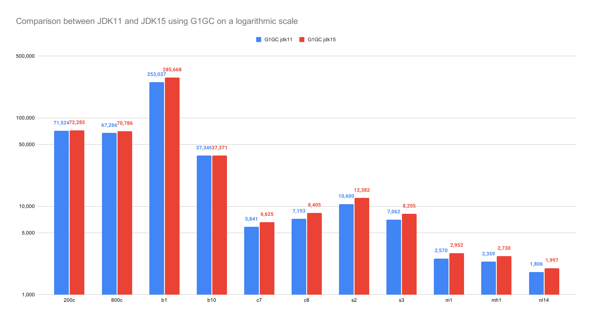

How much faster is Java 15?
Java 15 was released on the 15th of September 2020 and has promised to bring with it a few performance tweaks in its G1GC
and ParallelGC garbage collectors.
What does it mean for
OptaPlanner? Are there any benefits to be gained from upgrading from JDK11 to JDK15? In 2019,
we found out that ParallelGC works better for OptaPlanner. Is that still the case a year later? Let’s put it to the test!
Benchmark methodology
To run the benchmark we used:
- A stable machine without any other computational demanding processes running and with
Intel® Xeon® Silver 4116 @ 2.1 GHz (12 cores total / 24 threads)and128 GiBRAM memory, runningRHEL 8 x86_64. - Both G1 and Parallel GC for both Java versions to compare the impact of garbage collection.
Executedorg.optaplanner.examples.app.GeneralOptaPlannerBenchmarkAppwith the parameters-Xmx3840M -server -XX:+UseG1GC
and-Xmx3840M -server -XX:+UseParallelGCrespectively. The results presented in this blog represent the average values
taken from 10 iterations of each garbage collector and JDK combination. - Both OpenJDK 11 version “11.0.6”
OpenJDK Runtime Environment 18.9 (build 11.0.6+10-LTS)
OpenJDK 64-Bit Server VM 18.9 (build 11.0.6+10-LTS, mixed mode) - Both OpenJDK 15 version “15.0.1”
OpenJDK Runtime Environment 18.9 (build 15.0.1+9-LTS)
OpenJDK 64-Bit Server VM 18.9 (build 15.0.1+9-LTS, mixed mode) - OptaPlanner
7.44.0.Final - Solving a planning problem involves no IO (except a few milliseconds during startup to load the input). A single
CPU is completely saturated. It constantly creates many short-lived objects, and the GC collects them afterwards. - Each run solves 11 planning problems with OptaPlanner. Each planning problem runs for 5 minutes and starts with a
30 second JVM warm up which is discarded. - The benchmarks measure the number of scores calculated per second. Higher is better. Calculating
a score for a proposed planning solution is non-trivial: it involves many calculations, including checking for
conflicts between every entity and every other entity.
Executive summary
With Java 15, the average improvement is 11.24% for G1 and 13.85% for Parallel GC. The difference between the two
garbage collectors running on JDK 15 is 10.05% leaning in favor of Parallel GC.
For more information about difference between various GC algorithms, please see the following article that compares
Java garbage collectors performance.
Parallel GC remains to be the preferred GC to be used with OptaPlanner, since the throughput is still the most relevant
factor when it comes to garbage collection.
Results
Java 11 vs. Java 15


Cloud balancing | Machine reassignment | Course scheduling | Exam scheduling | Nurse rostering | Traveling Tournament | ||||||
JDK | 200c | 800c | B1 | B10 | c7 | c8 | s2 | s3 | m1 | mh1 | nl14 |
JDK11 | 71,524 | 67,266 | 253,037 | 37,346 | 5,841 | 7,193 | 10,600 | 7,062 | 2,570 | 2,359 | 1,806 |
JDK15 | 72,285 | 70,786 | 285,668 | 37,371 | 8,405 | 10,049 | 12,382 | 8,205 | 2,952 | 2,730 | 1,997 |
Difference (in %) | 1.06 | 5.23 | 12.9 | 0.07 | 13.42 | 16.85 | 16.81 | 16.19 | 14.86 | 15.73 | 10.58 |
Average (in %) | 11.24 |
Parallel GC vs. G1 GC on Java 15
Cloud balancing | Machine reassignment | Course scheduling | Exam scheduling | Nurse rostering | Traveling Tournament | ||||||
JDK | 200c | 800c | B1 | B10 | c7 | c8 | s2 | s3 | m1 | mh1 | nl14 |
JDK11 | 76,600 | 76,954 | 296,107 | 49,937 | 6,244 | 7,666 | 12,368 | 7,904 | 2,941 | 2,729 | 2,090 |
JDK15 | 91,131 | 87,565 | 301,981 | 48,518 | 7,393 | 9,496 | 13,964 | 8,963 | 3,570 | 3,294 | 2,295 |
Difference (in %) | 18.97 | 13.79 | 1.98 | -2.84 | 18.40 | 23.87 | 12.90 | 13.40 | 21.39 | 20.70 | 9.81 |
Average (in %) | 13.85 |
Conclusion
In conclusion, the performance gained in the JDK15 version is well worth considering regarding OptaPlanner. In addition, the preferred garbage collector to use is still ParallelGC, the performance of which is even better in comparison with G1GC than it was in our previous JDK performance comparison.
Cloud balancing | Machine reassignment | Course scheduling | Exam scheduling | Nurse rostering. | Traveling Tournament | ||||||
Garbage collector | 200c | 800c | B1 | B10 | c7 | c8 | s2 | s3 | m1 | mh1 | nl14 |
JDK15 G1GC | 72,285 | 70,786 | 285,668 | 37,371 | 8,405 | 10,049 | 12,382 | 8,205 | 2,952 | 2,730 | 1,997 |
JDK15 ParallelGC | 91,131 | 87,565 | 301,981 | 48,518 | 7,393 | 9,496 | 13,964 | 8,963 | 3,570 | 3,294 | 2,295 |
Difference (in %) | 26.07 | 19.16 | 5.40 | 22.97 | 10.39 | 11.49 | 11.33 | 8.46 | 17.31 | 17.12 | 12.98 |
Average (in %) | 10.05 |